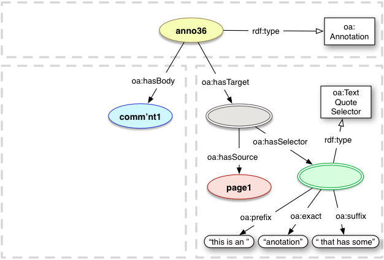
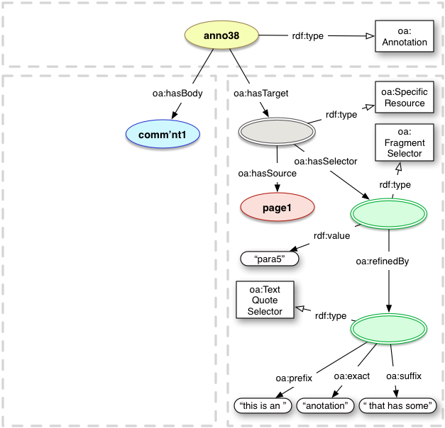

The Web Annotation Vocabulary specifies the set of RDF classes, predicates and named entities that are used by the Web Annotation Data Model [annotation-model]. It also lists recommended terms from other ontologies that are used in the model, and provides the JSON-LD Context and profile definitions needed to use the Web Annotation JSON serialization in a Linked Data context.
Status of This Document
This section describes the status of this document at the time of its publication. Other documents may supersede this document. A list of current W3C publications and the latest revision of this technical report can be found in the W3C technical reports index at https://www.w3.org/TR/.
By publishing this Recommendation, W3C expects that the functionality specified in this Recommendation will not be affected by changes to the Activity Streams 2.0 [activitystreams-core] and Activity Vocabulary [activitystreams-vocabulary] as those specifications proceed to Recommendation.
This document has been reviewed by W3C Members, by software developers, and by other W3C groups and interested parties, and is endorsed by the Director as a W3C Recommendation. It is a stable document and may be used as reference material or cited from another document. W3C's role in making the Recommendation is to draw attention to the specification and to promote its widespread deployment. This enhances the functionality and interoperability of the Web.
The specification is divided into two major sections: the terms defined in the Web Annotation ontology, and terms from other ontologies used in the model.
Each class lists the recommendations from the model for the REQUIRED, RECOMMENDED and OPTIONAL object and data properties for instances of the class. Instances may, of course, be the subject of any other triples that implementers find useful, however there is no expectation of interoperability in these cases.
The examples throughout the document are serialized as [Turtle] with the prefixes taken from the namespace declarations given in Appendix A. The examples are informative only.
The diagrams use the following style
Instances are depicted as colored ellipses.
Instances without an IRI are depicted as colored ellipses with double lines.
Classes are depicted as white rectangles.
Literals are depicted as white lozenges.
Relationships and properties are depicted as straight, black lines.
Class instantiation is depicted as a straight black line with white arrow head.
Example instance identifiers are lowercase and end in a number. For example, anno1 is a specific instance of an Annotation, whereas Annotation is a class.
Example literals follow the requirements for the model and, thus, must not be interpreted as the only possible value.
Lists are depicted as vertical braces with a gray background and '...' in the middle (regardless of if there are actually other items in the list or not).
Conceptual resource boundaries not explicit in the model, but considered important for understanding, are depicted as gray dashed boxes around the components. They are used to convey spatial parts of the diagrams and may be safely ignored.
1.3 Conformance
As well as sections marked as non-normative, all authoring guidelines, diagrams, examples, and notes in this specification are non-normative. Everything else in this specification is normative.
The key words MAY, MUST, MUST NOT, OPTIONAL, RECOMMENDED, REQUIRED, and SHOULD are to be interpreted as described in [RFC2119].
1.4 Terminology
IRI
An IRI, or Internationalized Resource Identifier, is an extension to the URI specification to allow characters from Unicode, whereas URIs must be made up of a subset of ASCII characters. There is a mapping algorithm for translating between IRIs and the equivalent encoded URI form. IRIs are defined by [rfc3987].
Resource
An item of interest that MAY be identified by an IRI.
Note
RDF [rdf-concepts] is fully internationalized and permits the use of IRIs for identifying resources. This specification uses the term IRI to make it clear that this is the case.
2. Web Annotation Ontology
The namespace used for the Web Annotation Ontology is:
http://www.w3.org/ns/oa#
A subClass of as:OrderedCollection that conveys to a consuming application that it should select one of the resources in the as:items list to use, rather than all of them. This is typically used to provide a choice of resources to render to the user, based on further supplied properties. If the consuming application cannot determine the user's preference, then it should use the first in the list.
A CssSelector describes a Segment of interest in a representation that conforms to the Document Object Model through the use of the CSS selector specification.
DataPositionSelector describes a range of data by recording the start and end positions of the selection in the stream. Position 0 would be immediately before the first byte, position 1 would be immediately before the second byte, and so on. The start byte is thus included in the list, but the end byte is not.
A class to encapsulate the different text directions that a textual resource might take. It is not used directly in the Annotation Model, only its three instances.
IRI: http://www.w3.org/ns/oa#Direction
Example 6: oa:Direction
<http://example.org/anno6>aoa:Annotation;oa:hasBody[rdf:value"This is a comment";dc:language"en";dc:format"text/plain";oa:textDirectionoa:ltr];oa:hasTarget<http://example.org/page1>.
2.1.7 FragmentSelector
The FragmentSelector class is used to record the segment of a representation using the IRI fragment specification defined by the representation's media type.
The HttpRequestState class is used to record the HTTP request headers that a client SHOULD use to request the correct representation from the resource.
The Motivation class is used to record the user's intent or motivation for the creation of the Annotation, or the inclusion of the body or target, that it is associated with.
A Range Selector can be used to identify the beginning and the end of the selection by using other Selectors. The selection consists of everything from the beginning of the starting selector through to the beginning of the ending selector, but not including it.
Instances of the ResourceSelection class identify part (described by an oa:Selector) of another resource (referenced with oa:hasSource), possibly from a particular representation of a resource (described by an oa:State). Please note that ResourceSelection is not used directly in the Web Annotation model, but is provided as a separate class for further application profiles to use, separate from oa:SpecificResource which has many Annotation specific features.
No example is given. The class should not be used in the Web Annotation model directly.
2.1.12 Selector
A resource which describes the segment of interest in a representation of a Source resource, indicated with oa:hasSelector from the Specific Resource. This class is not used directly in the Annotation model, only its subclasses.
No example is given. The class should only be used to derive subClasses.
2.1.13 SpecificResource
Instances of the SpecificResource class identify part of another resource (referenced with oa:hasSource), a particular representation of a resource, a resource with styling hints for renders, or any combination of these, as used within an Annotation.
A State describes the intended state of a resource as applied to the particular Annotation, and thus provides the information needed to retrieve the correct representation of that resource.
No example is given. The class should only be used in further ontologies to derive subclasses.
2.1.15 Style
A Style describes the intended styling of a resource as applied to the particular Annotation, and thus provides the information to ensure that rendering is consistent across implementations.
No example is given. The class should only be used in further ontologies to derive subclasses.
2.1.16 SvgSelector
An SvgSelector defines an area through the use of the Scalable Vector Graphics [SVG] standard. This allows the user to select a non-rectangular area of the content, such as a circle or polygon by describing the region using SVG. The SVG may be either embedded within the Annotation or referenced as an External Resource.
The TextPositionSelector describes a range of text by recording the start and end positions of the selection in the stream. Position 0 would be immediately before the first character, position 1 would be immediately before the second character, and so on.
The TextQuoteSelector describes a range of text by copying it, and including some of the text immediately before (a prefix) and after (a suffix) it to distinguish between multiple copies of the same sequence of characters.
<http://example.org/anno14>aoa:Annotation;oa:hasBody<http://example.org/comment1>;oa:hasTarget[oa:hasSource<http://example.org/page1>;oa:hasSelector[aoa:TextQuoteSelector;oa:exact"anotation";oa:prefix"this is an ";oa:suffix" that has some"]].
A TimeState records the time at which the resource's state is appropriate for the Annotation, typically the time that the Annotation was created and/or a link to a persistent copy of the current version.
The object of the relationship is the end point of a service that conforms to the [annotation-protocol], and it may be associated with any resource. The expectation of asserting the relationship is that the object is the preferred service for maintaining annotations about the subject resource, according to the publisher of the relationship.
This relationship is intended to be used both within Linked Data descriptions and as the rel type of a Link, via HTTP Link Headers [rfc5988] for binary resources and in HTML <link> elements. For more information about these, please see the Annotation Protocol specification [annotation-protocol].
The object of the predicate is a plain text string to be used as the content of the body of the Annotation. The value MUST be an xsd:string and that data type MUST NOT be expressed in the serialization. Note that language MUST NOT be associated with the value either as a language tag, as that is only available for rdf:langString.
A object of the relationship is the canonical IRI that can always be used to deduplicate the Annotation, regardless of the current IRI used to access the representation.
The object of the predicate is a copy of the text which is being selected, after normalization.
IRI: http://www.w3.org/ns/oa#exact
Range: xsd:string
Example 23: oa:exact
<http://example.org/anno22>aoa:Annotation;oa:hasBody<http://example.org/comment1>;oa:hasTarget[oa:hasSource<http://example.org/page1>;oa:hasSelector[aoa:TextQuoteSelector;oa:exact"anotation";oa:prefix"this is an ";oa:suffix" that has some"]].
2.2.7 hasBody
The object of the relationship is a resource that is a body of the Annotation.
The object of the relationship is a Selector that describes the segment or region of interest within the source resource. Please note that the domain (oa:ResourceSelection) is not used directly in the Web Annotation model.
The resource that the ResourceSelection, or its subclass SpecificResource, is refined from, or more specific than. Please note that the domain (oa:ResourceSelection) is not used directly in the Web Annotation model.
The relationship between the ResourceSelection, or its subclass SpecificResource, and a State resource. Please note that the domain (oa:ResourceSelection) is not used directly in the Web Annotation model.
The object of the property is a snippet of content that occurs immediately before the content which is being selected by the Selector.
IRI: http://www.w3.org/ns/oa#prefix
Range: xsd:string

Example 34: oa:prefix
<http://example.org/anno33>aoa:Annotation;oa:hasBody<http://example.org/comment1>;oa:hasTarget[oa:hasSource<http://example.org/page1>;oa:hasSelector[aoa:TextQuoteSelector;oa:exact"anotation";oa:prefix"this is an ";oa:suffix" that has some"]].
2.2.18 processingLanguage
The object of the property is the language that should be used for textual processing algorithms when dealing with the content of the resource, including hyphenation, line breaking, which font to use for rendering and so forth. The value must follow the recommendations of [BCP47].
The relationship between a Selector and another Selector or a State and a Selector or State that should be applied to the results of the first to refine the processing of the source resource.
IRI: http://www.w3.org/ns/oa#refinedBy

Example 36: oa:refinedBy
<http://example.org/anno35>aoa:Annotation;oa:hasBody<http://example.org/comment1>;oa:hasTarget[aoa:SpecificResource;oa:hasSource<http://example.org/page1>;oa:hasSelector[aoa:FragmentSelector;rdf:value"para5";oa:refinedBy[aoa:TextQuoteSelector;oa:exact"selected text";oa:prefix"text before the ";oa:suffix"and text after it"]]].
2.2.20 renderedVia
A system that was used by the application that created the Annotation to render the resource.
<http://example.org/anno42>aoa:Annotation;oa:hasBody<http://example.org/body1>;oa:styledBy[aoa:CssStyle;rdf:value".red { color: red }"];oa:hasTarget[oa:hasSource<http://example.org/target1>;oa:styleClass"red"].
2.2.27 suffix
The snippet of text that occurs immediately after the text which is being selected.
IRI: http://www.w3.org/ns/oa#suffix
Range: xsd:string
Example 44: oa:suffix
<http://example.org/anno43>aoa:Annotation;oa:hasBody<http://example.org/comment1>;oa:hasTarget[oa:hasSource<http://example.org/page1>;oa:hasSelector[aoa:TextQuoteSelector;oa:exact"anotation";oa:prefix"this is an ";oa:suffix" that has some"]].
2.2.28 textDirection
The direction of the text of the subject resource. There MUST only be one text direction associated with any given resource.
<http://example.org/anno44>aoa:Annotation;oa:hasBody[rdf:value"This is a comment";dc:language"en";dc:format"text/plain";oa:textDirectionoa:ltr];oa:hasTarget<http://example.org/page1>.
2.2.29 via
A object of the relationship is a resource from which the source resource was retrieved by the providing system.
<http://example.org/anno46>aoa:Annotation;oa:hasBody[aoa:TextualBody;rdf:value"Very high quality"];oa:hasTarget<http://example.com/resource1>;oa:motivatedByoa:assessing.
2.3.2 bookmarking
The motivation for when the user intends to create a bookmark to the Target or part thereof.
<http://example.org/anno49>aoa:Annotation;oa:hasBody[aoa:TextualBody;rdf:value"A comment about the page"];oa:hasTarget<http://example.com/page1>;oa:motivatedByoa:commenting.
2.3.5 describing
The motivation for when the user intends to describe the Target, as opposed to a comment about them.
<http://example.org/anno50>aoa:Annotation;oa:hasBody[aoa:TextualBody;rdf:value"A description of the image"];oa:hasTarget<http://example.com/image1>;oa:motivatedByoa:describing.
2.3.6 editing
The motivation for when the user intends to request a change or edit to the Target resource.
<http://example.org/anno56>aoa:Annotation;oa:hasBody[aoa:TextualBody;rdf:value"A question about the resource"];oa:hasTarget<http://example.com/resource1>;oa:motivatedByoa:questioning.
2.3.12 replying
The motivation for when the user intends to reply to a previous statement, either an Annotation or another resource.
<http://example.org/anno57>aoa:Annotation;oa:hasBody[aoa:TextualBody;rdf:value"A reply to a question"];oa:hasTarget<http://example.com/anno1>;oa:motivatedByoa:replying.
2.3.13 tagging
The motivation for when the user intends to associate a tag with the Target.
<http://example.org/anno60>aoa:Annotation;oa:hasBody[aoa:TextualBody;rdf:value"Left to Right text";oa:textDirectionoa:ltrDirection];oa:hasTarget<http://example.com/thing1>.
2.3.16 rtlDirection
The direction of text that is read from right to left.
The dc:language predicate recommends the use of a controlled vocabulary. The use of dc:language in the Annotation model further specifies that the vocabulary to use is [BCP47].
This vocabulary may be extended in the regular way, by creating new or importing existing predicates and classes from other RDF based ontologies. Extensions may be made to any resource, including adding new objects as well as properties. If there is a property in one of the ontologies that are already included in the context, then it is RECOMMENDED to use a CURIE, the namespace and property name separated by a : character, as the JSON-LD key rather than creating a new context.
For example, it is easier to add skos:prefLabel to the Annotation rather than requiring clients to download a new context document to discover the mapping.
Example 103: Extension Example 1
{
"@context": "http://www.w3.org/ns/anno.jsonld",
"id": "http://example.org/anno89",
"type": "Annotation",
"skos:prefLabel": "Picture Annotation",
"body": {
"type": "TextualBody",
"value": "I love this picture!"
},
"target": {
"id": "http://example.com/images/picture1",
"type": "Image"
}
}
In order to ensure a lack of collision between key names, a JSON-LD context document SHOULD be made available when the term is not from an ontology that is already in the Web Annotation context. Extension contexts MUST NOT redefine existing JSON-LD keys from the Web Annotation context. Implementations MUST ignore unfamiliar properties when processing the data, but servers SHOULD preserve them if they are part of a valid and included context.
The context SHOULD be associated with the resource that most closely encapsulates the extension properties. This is to try to ensure that extensions which define the same key do not collide unexpectedly. If there is more than one context document for a particular resource, then they must be included in an array.
For example, adding height and width for the target image using the EXIF vocabulary [exif] could be done by defining a JSON-LD context, including the height and width properties, and linking to the newly defined context in the target resource.
Note that the current JSON-LD [JSON-LD] specification does not allow arrays to contain other arrays directly. As JSON-LD is the RECOMMENDED serialization format, extensions SHOULD avoid the use of this pattern.
Finally, new classes can be defined to further extend the model for specific communities and use cases. New Selectors and States are particularly valuable for extension for new ways of defining representations, and for selecting segments of those representations.
For example, an annotation on a three dimensional model would require the addition of depth and the starting position on the z axis, along with x, y, width, and height. These might be kept together in a new ThreeDSelector resource.
Example 105: Extension Example 3
{
"@context": "http://www.w3.org/ns/anno.jsonld",
"id": "http://example.org/anno91",
"type": "Annotation",
"skos:prefLabel": "3d Annotation",
"body": {
"type": "TextualBody",
"value": "I love this part of the model!"
},
"target": {
"source": "http://example.org/models/robot.3d",
"selector": {
"@context": "http://example.org/3d/ns/extension.jsonld",
"type": "ThreeDSelector",
"x": 1035,
"y": 245,
"z": 782,
"w": 120,
"h": 180,
"d": 90
}
}
}
A. JSON-LD Context
This section is non-normative.
The RECOMMENDED serialization format is [JSON-LD]. The JSON-LD context presented below is RECOMMENDED to ensure consistency between implementations, and SHOULD be referenced as http://www.w3.org/ns/anno.jsonld. The same IRI SHOULD be used as the profile IRI for representations that conform to the model and context.
There is an unofficial, yet well implemented, JSON-LD specification [json-ld-framing] that describes a deterministic layout for serializing an RDF graph into a particular JSON-LD document layout. Applying the following frames to the graph of information will generate JSON as close as possible to the serialization recommended by the Web Annotation Data Model.
Although the list of Motivations in the specification is derived from an extensive survey of the annotation landscape, there are many situations where more precise definitions are required or desirable. In these cases it is RECOMMENDED to create a new Motivation resource and relate it to one or more that already exist.
New Motivations MUST be instances of oa:Motivation, which is a subClass of skos:Concept. The skos:broader relationship SHOULD be asserted between the new Motivation and at least one existing Motivation, if there are any that are broader in scope. Other relationships, such as skos:relatedMatch, skos:exactMatch and skos:closeMatch, SHOULD also be asserted to concepts created by other communities.
Model
Fig. 1Extending Motivations
D. Proposed Definitions
This section is non-normative.
The following classes were proposed for the ontology, but did not have the necessary implementations and were consequently removed.
D.1 Composite
A subClass of as:OrderedCollection that conveys to a consuming application that it should use all of the resources in the as:items list, but that order is not important.
<http://example.org/anno92>aoa:Annotation;oa:motivatedByoa:commenting;oa:hasBody[aoa:TextualBody;rdf:value"These pages together provide evidence of the conspiracy"];oa:hasTarget[aoa:Composite;as:items(<http://example.org/page1><http://example.org/page6><http://example.org/page4>)].
D.2 Independents
A subClass of as:OrderedCollection that conveys to a consuming application that each of the resources in the as:items list are independently associated with all of the other bodies or targets.
A subClass of as:OrderedCollection that conveys to a consuming application that it should use each of the resources in the as:items list, and that their order is important.
For this specification to be advanced to Proposed Recommendation, there must be at least two independent implementations that demonstrate the validity of the vocabulary. The vocabulary will be considered valid when the following conditions have been demonstrated:
The JSON-LD context document can be parsed without errors by JSON-LD validators.
The JSON-LD context document can be used to convert JSON-LD serialized Annotations into RDF triples.
The graphs produced by different implementations are isomorphic.
The graphs produced can be converted back into JSON-LD without loss of information, within the limits of the existing standards and excluding extensions to the vocabulary.
The ontology documents can be parsed without errors by RDF Schema validators.
The ontology is internally consistent with respect to domains, ranges, inverses, and any other ontology features specified.
Note
The recommended pattern for extensions in JSON-LD of including the extension context document in the serialization of the resource that uses the extension predicates and/or classes is not able to be round-tripped, as JSON-LD does not maintain the alignment between context and resource once transformed into a graph. The order and exact naming of the JSON keys in the JSON-LD serialization resulting from a graph is not considered a feature of the Vocabulary, and thus not required for demonstrating its validity. The naming of the keys is instead a feature of the Annotation Model and verified by its exit criteria.
F. Changed from Previous Versions
This section is non-normative.
F.1 Changes from the Proposed Recommendation of 2017-01-17
No significant changes.
F.2 Changes from the Candidate Recommendation of 2016-11-22
Removed at-risk status of ActivityStreams predicates
F.3 Changes from the Candidate Recommendation of 2016-09-06
Moved Independents, Composite and List to an informative appendix
Updated JSON-LD context appendix
Minor formatting issues
Fixed appendices to be marked as non-normative by respec
F.4 Changes from the Candidate Recommendation of 2016-07-05
The Web Annotation Working Group gratefully acknowledges the contributions of the Open Annotation Community Group. The output of the Community Group was fundamental to the current data model.
The following people have been instrumental in providing thoughts, feedback, reviews, content, criticism and input in the creation of this specification:
Vladimir Alexiev, Art Barstow, Tim Berners-Lee, Chris Birk, Dan Brickley, Sarven Capadisli, Paolo Ciccarese, Tim Cole, Ray Denenberg, TB Dinesh, Sergiu Gordea, Benjamin Goering, Amy Guy, Ivan Herman, Frederick Hirsch, Antoine Isaac, Jacob Jett, Takeshi Kanai, Gregg Kellogg, Andreas Kuckartz, Randall Leeds, Hugo Manguinhas, Shane McCarron, Ben De Meester, Luc Moreau, Addison Phillips, Davis Salisbury, Robert Sanderson, Felix Sasaki, Doug Schepers, Tzviya Siegman, Stian Soiland-Reyes, Manu Sporny, Nick Stenning, Jon Stroop, Lutz Suhrbier, Kyrce Swenson, Raphaël Troncy, Simeon Warner, Erik Wilde, Dan Whaley, Benjamin Young